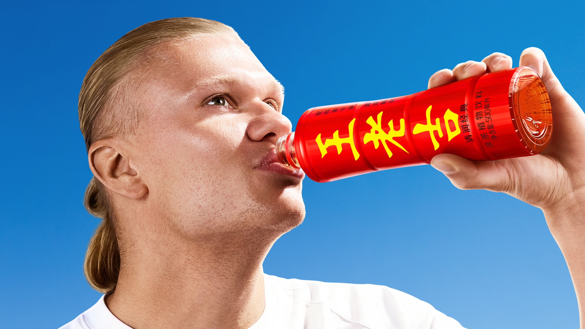
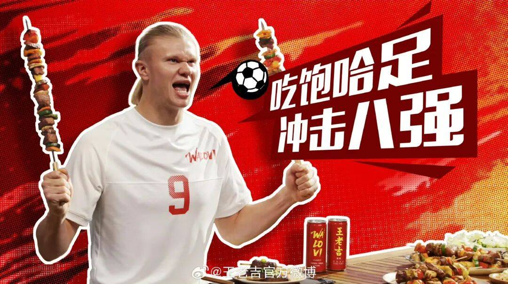
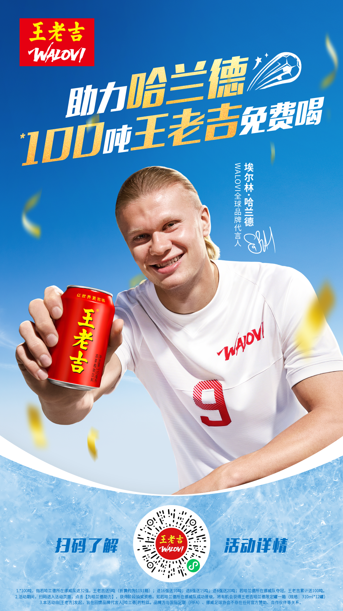

案例发生了什么



王老吉在 6 月 9 日官宣哈兰德成为海外品牌 WALOVI 全球品牌代言人，没有直译难以向海外消费者解释的“上火”，而是抓住 Haaland 姓名开头的“Ha / 哈”：让球星用中文说“哈王老吉”，把天热、烧烤、看球三个高频场景写入官宣文案，再以魔性主题曲、喷火画面、红色定制罐和“100 吨免费喝”小程序活动组成从记忆到转化的完整链条。随着哈兰德进球、晋级与最终出局，官方账号持续发布预制内容，使代言不止停在一张官宣海报。
MARKETING KNOWLEDGE ROUTER · 营销知识路由器
营销启发卡
用三张卡片保留最值得记住、讨论和迁移的部分。 卡片底部按主题连接全站相关案例、经典方法与深度文章。
核心动作
把哈兰德姓名中的“哈”变成声音锚点，用“哈王老吉”降低中文品牌名与“怕上火”概念的跨语言记忆门槛；让哈兰德说中文，并以魔性主题曲、喷火和烧烤场景制造文化反差，形成既保留中国识别、又能被海外观众理解的广告表达。
传播与商业机制
以“球星全球代言 / 魔性广告 / 赛果互动”为资源起点，进入球星/球队/授权内容、电商、门店、大小屏与海外渠道；结果优先观察搜索、到店、商品成交、会员沉淀与重点海外市场认知，不把曝光直接等同于销售。
可复用的方法
中国品牌出海不是把国内口号逐字翻成英文，而是保留最有辨识度的文化资产，再找到全球受众听得懂、记得住、愿意参与的声音钩子、生活场景和交易机制。
适用条件、风险与证据
- 先明确目标是国内动销、出海认知、渠道关系还是授权商品，而不是全部都做。
- 球星或球队的赛果只是放大器，必须准备常态内容和转化出口。
- 对授权范围、地域、肖像和商品库存建立可追溯台账。
核验记录可将已核动作作为内部判断基础；涉及投放规模、销售结果或合作细则时，仍应以品牌、平台或权利方的一手发布为准。 当前记录：已核（王老吉官网 + 官方微博 + CGTN）；素材状态：已归档 4 张官网官宣、官方账号与活动转化物料。
品牌与权威来源物料
这里只展示可追溯到品牌、权利方、官方账号或明确注明原始出处的真实物料；研究图卡不计入案例图片。

资料与来源
官方资料、结果数据与下一步
已验证事实
- 王老吉官网于 2026 年 6 月 9 日官宣埃尔林·哈兰德成为 WALOVI 全球品牌代言人；官网官宣主视觉即为本页首图。
- 哈兰德官方微博同日发布中英文官宣，以“天热就哈王老吉、烧烤就哈王老吉、看球就哈王老吉”明确三个消费场景；王老吉官方微博持续承担中文市场的赛程响应。
- CGTN 于 6 月 10 日的官方报道确认，WALOVI 广告包含哈兰德喷火与魔性主题曲等创意，并将报道配图来源标注为 WALOVI 微博账号。
- 官方活动以“哈兰德每晋级一轮，赠饮奖池继续加码”组织 100 吨王老吉抽奖；7 月 6 日官方微博称晋级八强时已送出 15 吨、下一阶段加码 20 吨，表明赛果机制已实际触发。
可追溯的结果
- “已送出 15 吨、下一阶段 20 吨”来自品牌官方微博自报，可证明活动进程，不能替代中奖名单、物流签收、核销率或真实饮用人数。
- 目前没有取得海外分市场触达、英语版/中文版完播率、品牌搜索提升、定制罐销量、海外铺货或消费者认知变化；社交互动只能作为阶段快照，不能直接推导销售效果。